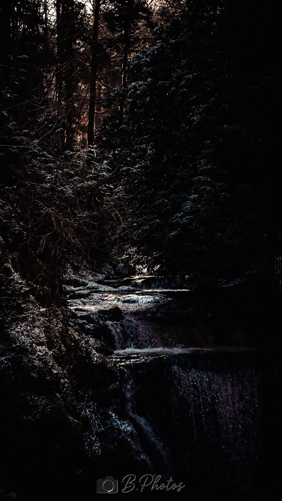
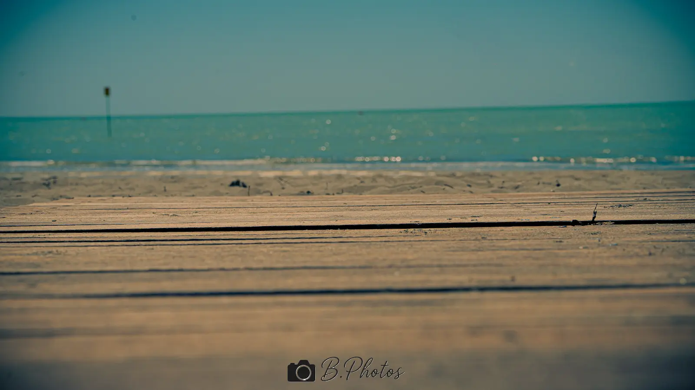
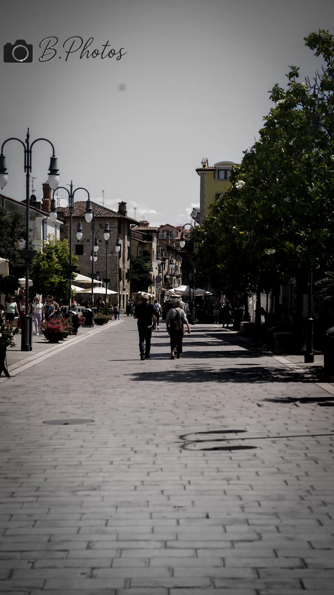
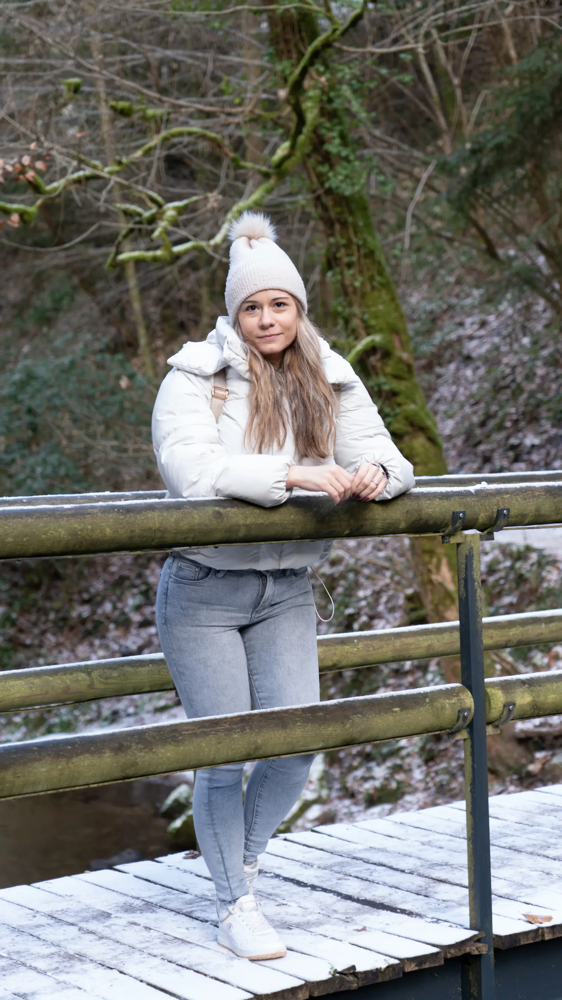
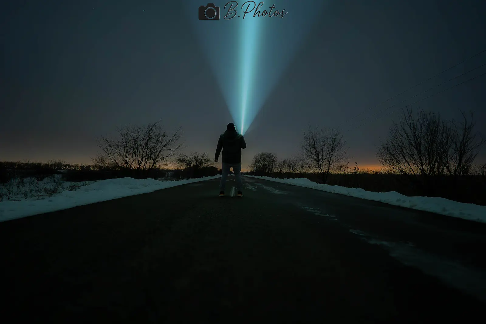
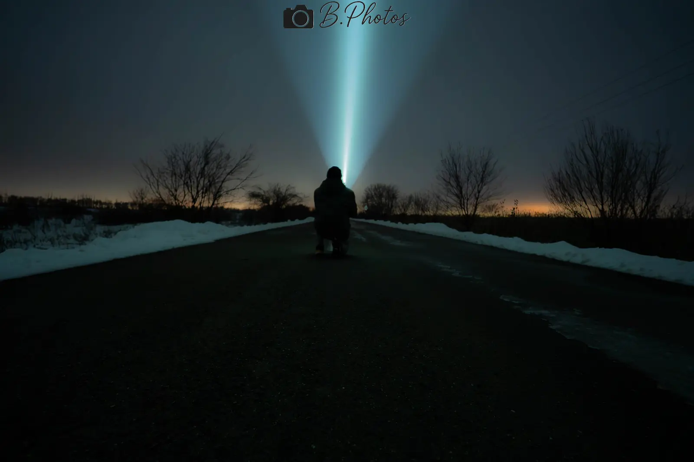

B. Photography
Portrait, Paar, Natur, Auto, Familie
Premium und klare Bildsprache
Wien und Umgebung
Kuratiertes Material
Klicke auf ein Bild für die Detailansicht.
Die Galerie zeigt dieselbe klare Premium-Richtung, die auch in meinen Shootings steckt: natürliche Präsenz, saubere Lichtführung und ein bewusster visueller Rhythmus.











Nächster Schritt